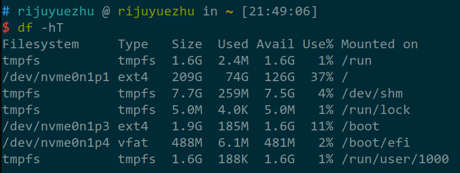

Config on Ubuntu 22.04
This article mainly talks about what to do after installing Ubuntu 22.04.
This time I configure Ubuntu 22.04 and form my own configuration. And I record the process below.
Install Ubuntu 22.04
Here is a pretty-written tutorial for installing Ubuntu 22.04, but there are some stuffs to notice:
- Do not give
/hometoo much space and/too few, or it will be difficult later when installing many softwares. For me, I recommend that you don't specifically give/homespace additionally. - Use Filesystem type
ext4instead ofxfs.
For a SSD of size 256GB, I attribute it into districts like:

After that, see Things to do After Installing Ubuntu 22.04 for some basic settings.
To install some basic sofewares, google it.
One problem that needs to be treated carefully is the Chinese input method. This is a tutorial to configure an input method based on Fcitx5.
Oh My Zsh
Oh My Zsh is one of the greatest platform to manage zsh configuration. Surf the official documentation for installing it.
After that, you can have some plugins for it. This one shows some of the awesome plugins for oh my zsh. One thing you shall notice is that for the installation of the plugins, you'd better turn to the official documentation for help, instead of the article provided.
Tmux
Following are some of the configuration note for Tmux:
- https://www.jianshu.com/p/fd3bbdba9dc9
- https://zhuanlan.zhihu.com/p/166557307
- https://www.rushiagr.com/blog/2016/06/16/everything-you-need-to-know-about-tmux-copy-pasting-ubuntu/
- https://www.cnblogs.com/ericte/p/13613303.html
After that, I recommend a plugin called tmux-resurrect along with tmux-continuum, which help to restore the status of tmux even after restarting.
Vim
Following are some of the configuration note for vim or neovim. (I recommend neovim)
And for plugins, turn to my configuration repository.
Configuration repository
See https://github.com/rijuyuezhu/config-repo for my configurations.